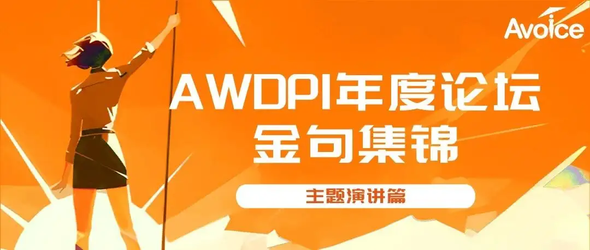
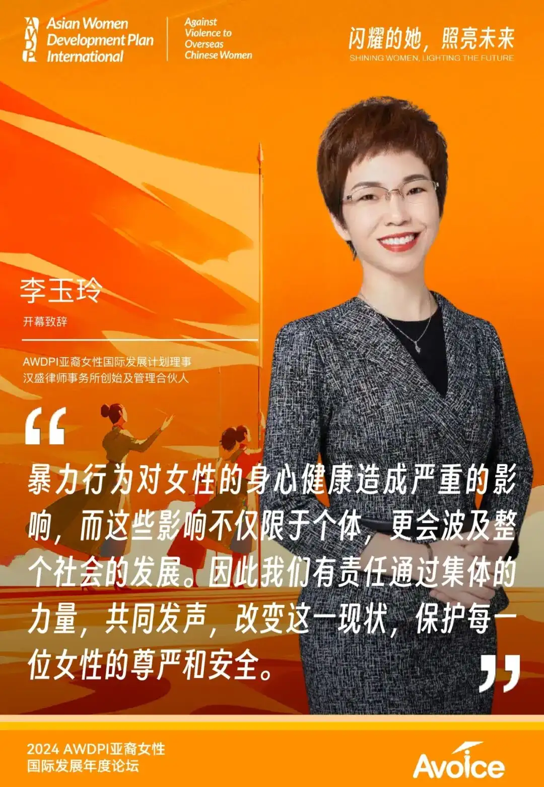
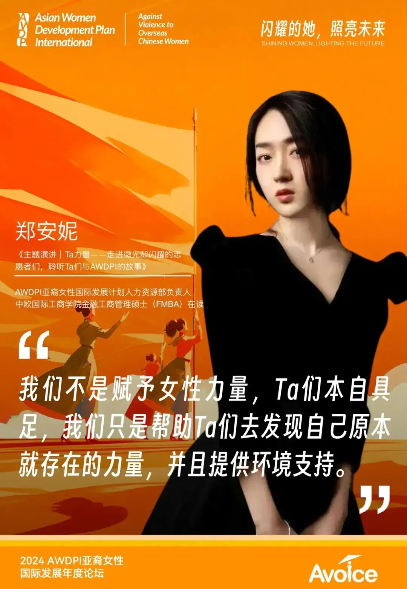
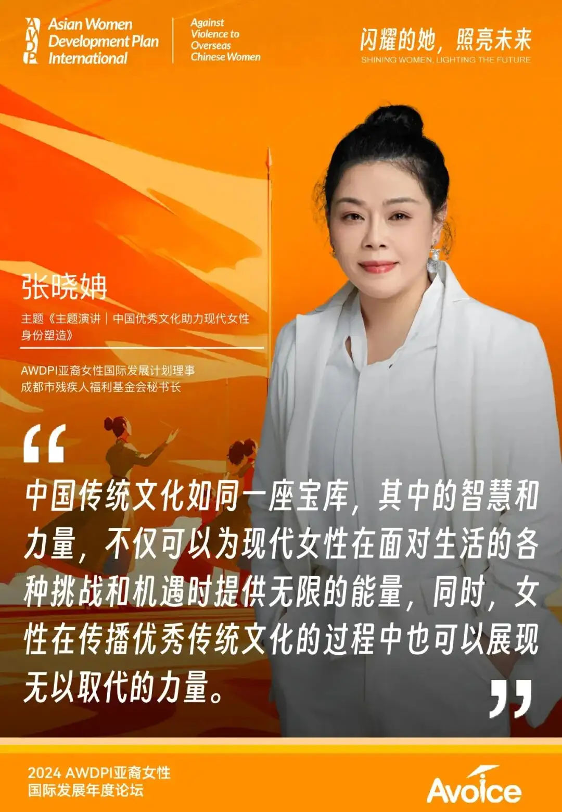
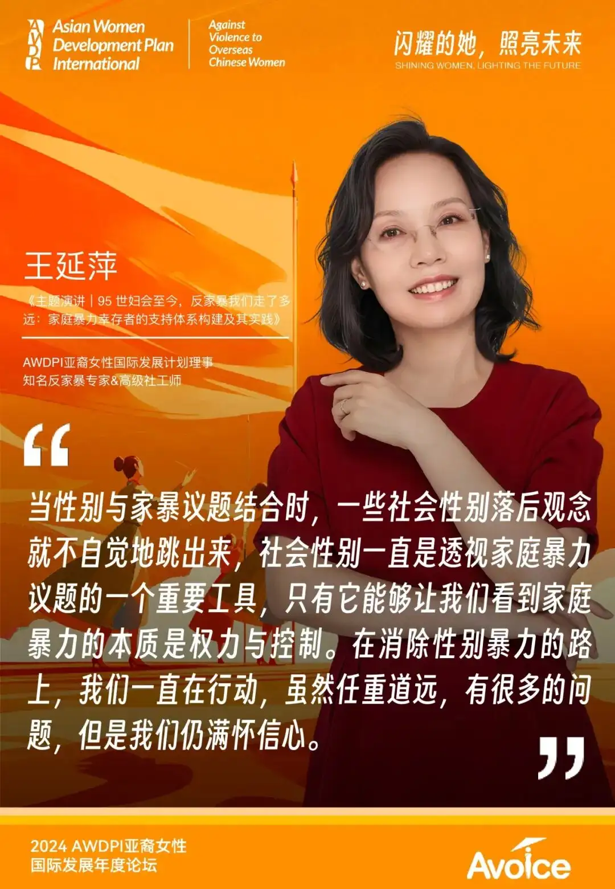
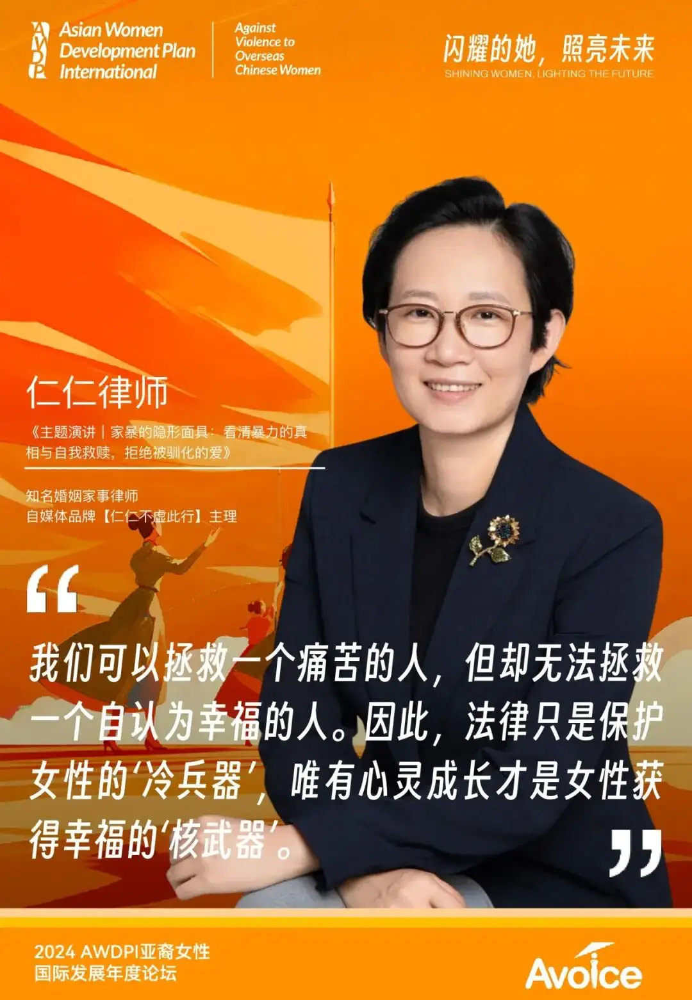
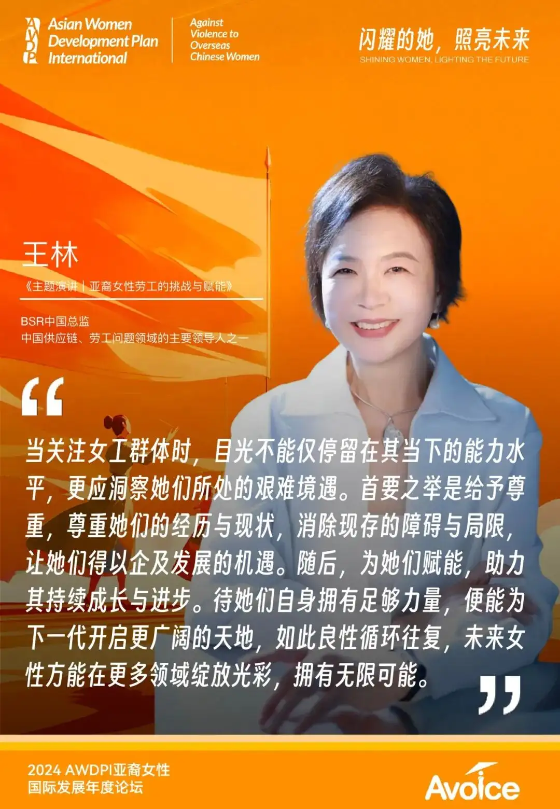
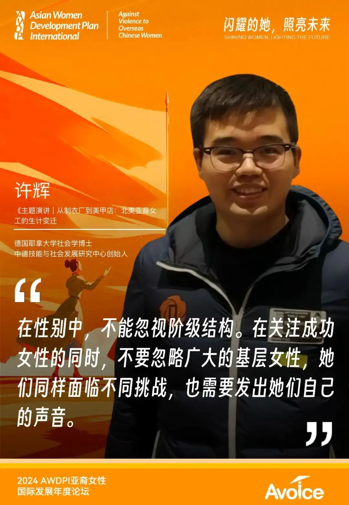
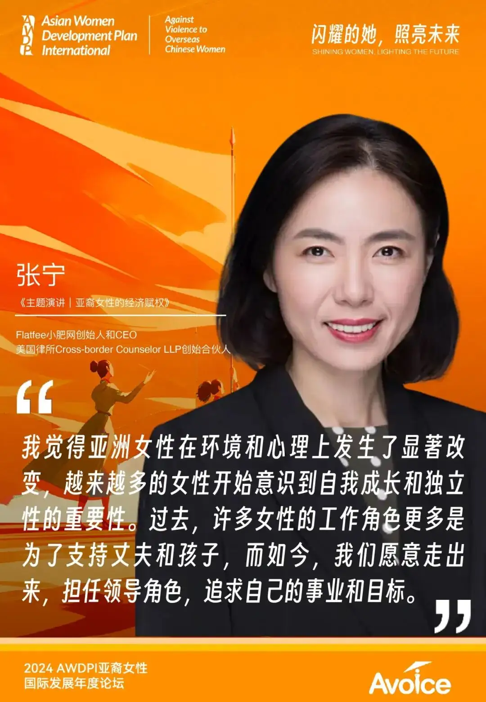
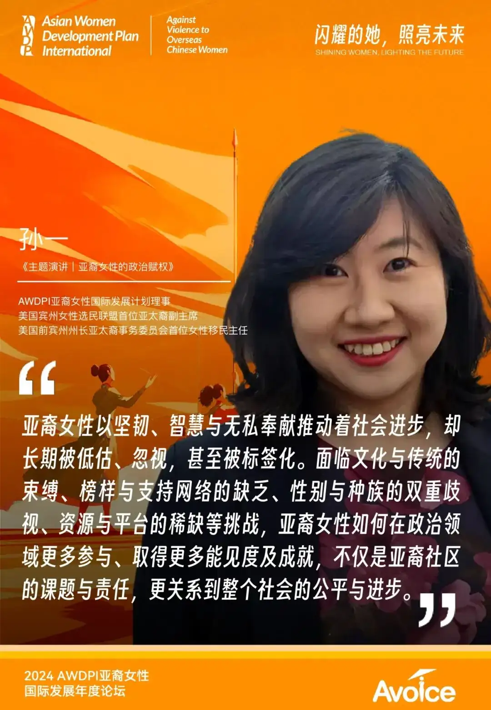

在近期举行的 2024AWDPI亚裔女性国际发展论坛上，来自各领域、各地区、各年龄层的Ta们齐聚一堂，以各自独特的视角和深刻的见解，带来了一场精彩的思想盛宴。Ta们的成长，Ta们的见解，Ta们的信念，凝练在一句句话语之中，为更多的Ta们带来启发与激励。
让我们一起走进Ta们的故事中，
聆听那些能够触动心灵，启迪思想的语句。









一句话难以激起浪潮，却足以荡漾起阵阵涟漪，引发深远的共鸣。这些言语不仅是智慧的火花，更是行动的号角，激励着每一位女性勇敢地面对挑战，打破束缚她们的桎梏，如同破晓的光芒，照亮女性力量的辉煌。
借着这抹光亮，愿越来越多的Ta们能够勇敢地打破困境，在更多的领域、更大的舞台上展现女性的力量和才华，更好地推动性别平等和女性赋能的进程。每一次微小的涟漪，都有可能汇聚成改变世界的力量，让我们共同见证并支持Ta们的旅程，为构建一个更加平等包容的世界贡献力量。
海报｜Kylan AWDPI公众号团队